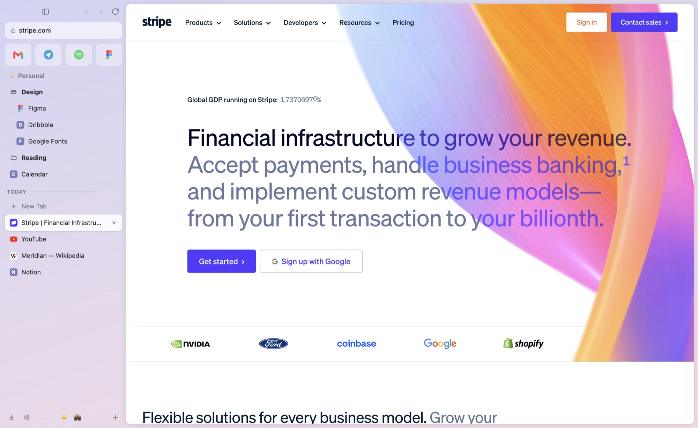

The browser for people who loved ArcБраузер для тех, кто любил Arc
Spaces, pinned tabs, split view and a command bar, just like you're used to. Bring your Arc sidebar over in one click.Спейсы, закреплённые вкладки, сплит-вью и командная строка — всё как вы привыкли. Ваш сайдбар из Arc переезжает в один клик.
Download Meridian
Install in a minuteУстановка за минуту
Pick your computer. No accounts, no sign-up.Выберите свой компьютер. Без аккаунтов и регистрации.
- 1
Open TerminalОткройте Терминал
Press ⌘ Command + Space, type Terminal and press Return. A window with text opens — that's it, nothing scary.Нажмите ⌘ Command + Пробел, напишите Терминал (или Terminal) и нажмите Return. Откроется окно с текстом — это он, ничего страшного.
- 2
Copy this line, paste it there, press ReturnСкопируйте эту строку, вставьте туда и нажмите Return
Click Copy, click into Terminal, press ⌘ V and then Return.Нажмите Копировать, кликните в Терминал, нажмите ⌘ V, а потом Return.
curl -fsSL https://undermove.github.io/meridian-browser/install.sh | bash - 3
Done — Meridian opens by itselfГотово — Meridian откроется сам
It's now in your Applications folder, like any other app. Coming from Arc? Meridian offers to bring your spaces and tabs over right away.Он уже лежит в «Программах», как любое другое приложение. Пользовались Arc? Meridian сразу предложит перенести ваши спейсы и вкладки.
I'd rather download it the usual wayХочу скачать обычным способом
- Download the file for your Mac:Скачайте файл для своего Mac: Not sure? Apple menu → About This Mac: "Chip Apple M…" means Apple silicon.Не знаете какой? Меню → Об этом Mac: «Чип Apple M…» — значит Apple silicon.
- Open it and drag Meridian into Applications.Откройте его и перетащите Meridian в «Программы».
- The first time, macOS will refuse to open it because Meridian isn't from the App Store. Open System Settings → Privacy & Security, scroll down and click Open Anyway.В первый раз macOS не даст его открыть, потому что Meridian не из App Store. Откройте Системные настройки → Конфиденциальность и безопасность, пролистайте вниз и нажмите Всё равно открыть.
- 1
Download the installerСкачайте установщик
Download for WindowsСкачать для Windows - 2
Open it. If a blue window appears, click "More info", then "Run anyway"Откройте его. Если появится синее окно — нажмите «Подробнее», потом «Выполнить в любом случае»
Windows shows this for apps from small developers. It's expected.Windows так делает с приложениями от небольших разработчиков. Это нормально.
- 3
Click "Next" a couple of timesПару раз нажмите «Далее»
Meridian appears on your desktop and in the Start menu.Meridian появится на рабочем столе и в меню «Пуск».
- 1
Paste this into a terminalВставьте это в терминал
Installs for your user only (no sudo), adds Meridian to the app menu. Run it again to update.Ставит только для вашего пользователя (без sudo) и добавляет Meridian в меню приложений. Запустите ещё раз, чтобы обновить.
curl -fsSL https://undermove.github.io/meridian-browser/install.sh | bash - 2
Or install a packageИли поставьте пакет
Then:
sudo apt install ./Meridian-*.debПотом:sudo apt install ./Meridian-*.deb
Everything you liked about ArcВсё, за что вы любили Arc
And a few things Arc never had.И кое-что, чего в Arc не было.
Spaces & sidebarСпейсы и сайдбар
Separate spaces for work and life, each with its own colour and logins. Swipe between them.Отдельные спейсы для работы и жизни, у каждого свой цвет и свои логины. Переключаются свайпом.
One-click Arc importИмпорт из Arc в один клик
Spaces, colours, pinned tabs, folders and favorites move over on first launch.Спейсы, цвета, закреплённые вкладки, папки и избранное переезжают при первом запуске.
Today tidies itselfToday убирается сам
Tabs you haven't touched in a while go to the archive. Pinned ones stay. Nothing is lost.Вкладки, которые давно не открывали, уходят в архив. Закреплённые остаются. Ничего не теряется.
Split view & PeekСплит-вью и Peek
Two pages side by side, and links that open in a quick preview instead of a new tab.Две страницы рядом и ссылки, которые открываются в быстром превью, а не в новой вкладке.
Claude built inВстроенный Claude
Ask about any page, tidy your tabs, and let AI agents use the browser — only with your permission.Спросите про любую страницу, разберите вкладки и дайте AI-агентам пользоваться браузером — только с вашего разрешения.
Private by defaultПриватно по умолчанию
Built-in ad and tracker blocking. No account, no telemetry. Your data stays on your computer.Встроенная блокировка рекламы и трекеров. Без аккаунта и без телеметрии. Данные остаются у вас.
QuestionsВопросы
Is it really free?Это правда бесплатно?
Yes. Meridian is open source (MIT license). No subscription, no account, no ads.Да. Meridian — открытый проект (лицензия MIT). Без подписки, аккаунта и рекламы.
Why does my computer warn me about it?Почему компьютер ругается при установке?
Apple and Microsoft show warnings for apps that aren't signed with their paid developer certificates. Meridian doesn't have those yet. The Mac command above installs it without the warning; it downloads the app straight from GitHub and checks that the file wasn't changed on the way.Apple и Microsoft предупреждают о приложениях без их платных сертификатов разработчика. У Meridian их пока нет. Команда для Mac выше ставит его без предупреждения: она скачивает приложение прямо с GitHub и проверяет, что файл не подменили по дороге.
Is the Terminal command safe?Команда в Терминале безопасна?
It only downloads the latest Meridian release from GitHub, checks its checksum and puts the app in Applications. It never asks for your password. You can read the script before running it.Она только скачивает последнюю версию Meridian с GitHub, сверяет контрольную сумму и кладёт приложение в «Программы». Пароль она не спрашивает. Скрипт можно прочитать перед запуском.
Will my Arc logins come over?Мои логины из Arc перенесутся?
Your spaces, tabs, folders and favorites do. Logins don't (Arc keeps them encrypted), so you sign in to each site once.Спейсы, вкладки, папки и избранное — да. Логины — нет (Arc хранит их зашифрованными), так что на каждый сайт нужно будет зайти один раз.
How do I update?Как обновлять?
On Mac and Linux, run the same command again. On Windows, download and run the new installer. Your tabs and settings stay.На Mac и Linux — запустите ту же команду ещё раз. На Windows — скачайте и запустите новый установщик. Вкладки и настройки сохранятся.
Do Chrome extensions work?Работают ли расширения Chrome?
Partly, as an experiment. Meridian blocks ads on its own, and works great next to your password manager's app.Частично, в экспериментальном режиме. Рекламу Meridian блокирует сам, а с менеджером паролей отлично работает через его приложение.